Introduction
This documentation is last updated on 10th August 2017.
Thanks for purchasing Candor theme. If you have any question that is beyond the scope of this documentation, Feel free to ask that on our support website. You can visit this knowledge base article to learn about how to get item purchase code from themeforest.net to sign-up on our support site.
Important Note
It is highly recommended to use child theme, So that you can easily update parent theme whenever a new update becomes available. A pre-built ready to use child theme is included in the main theme pack that you might have downloaded from themeforest.
How to Update Theme
If you want to update your theme then you can consult this knowledge base article for automatic update OR you can consult this knowledge base article for manual update.
Support Policy
Support Includes- Answering technical questions about theme features.
- Assistance with reported bugs and issues.
- Help with included 3rd party assets.
- Theme customization services.
- Theme installation services.
Install Theme
To start you must have a working version of WordPress. Almost all major web hosts provides one click WordPress install and you can consult your host's help site for more information in this regard. For manual install you can consult WordPress Codex Installing WordPress.
Once you have a working version of WordPress, You need to download "All Files and Documentation" from themeforest download page and extract the downloaded zip to get various files including inspiry-candor.zip.
{kind=link}
Install Theme Via WordPress Dashboard ( Recommended Way )
- Go to 'Appearance > Themes' section
- Click 'Add New' and select the 'Upload Theme' option
- Click 'Upload Theme'
- Choose the inspiry-candor.zip file and press 'Install Now'
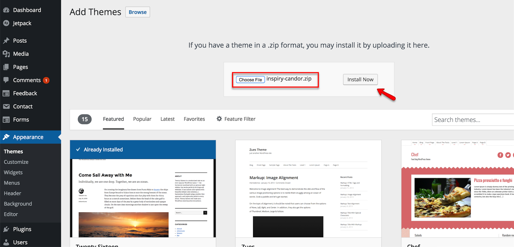 - Once the theme is uploaded you need to activate it.
- After activation go to "Appearance > Customize" to play with theme's settings.

if you face any problem during upload through dashboard, please upload the theme using FTP as guided below.
Install Theme Via FTP ( Alternative Way )
- Access your hosting server using an ftp client like FileZilla
- Go to the 'wp-content/themes' folder of your WordPress installation
- Extract the inspiry-candor.zip file and put the inspiry-candor folder in 'wp-content/themes/' folder
- Go to 'WordPress Dashboard > Appearance > Themes' section to activate the theme
- After activation go to "Appearance > Customize" to play with theme's settings.
Install Child Theme ( Highly Recommended )
It is highly recommended to use child theme, So that you can easily update parent theme whenever a new update becomes available. A pre-built ready to use child theme is included in the main theme pack that you have downloaded from themeforest.
To install child theme, You need to upload the inspiry-candor-child.zip and activate it in the same way as you have uploaded and activated parent theme's inspiry-candor.zip.
Next Step is to Import Demo Contents
Import Demo Contents
You can follow one of these approaches.
- One Click Demo Import ( Automatic & Recommended )
- Import XML Contents and Configure Settings Manually
1. One Click Demo Import ( Automatic & Recommended )
-
Go to Dashboard → Appearance and click on Import Demo Data in the sub menu items.
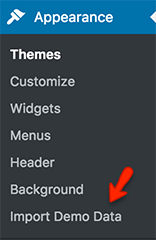Click on Import Demo Data button. Wait for few minutes as the demo images are being fetched from the remote server and this process can take a couple of minutes.
Once the import process is complete, You will receive a notice like the one displayed in the screen shot below.
Visit your site and you will find your site working like the theme demo.
-
Go to Settings → Permalinks and choose Post name from Common Settings and save the changes, As displayed in screen shot below.
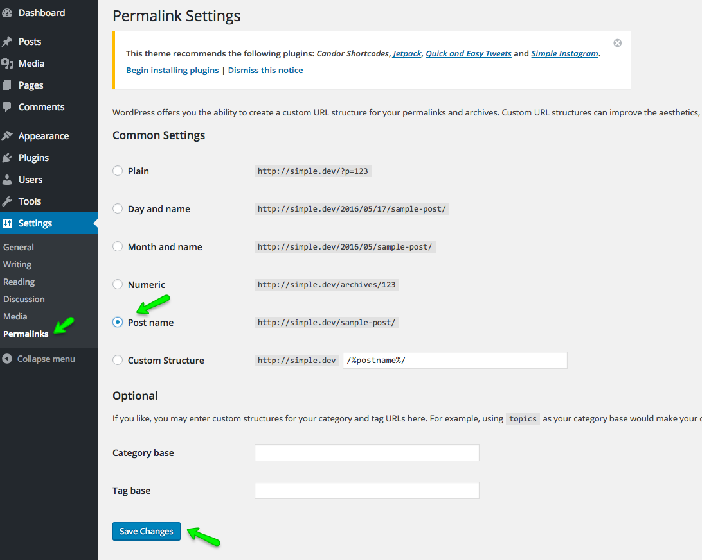
2. Import XML Contents and Configure Settings Manually
-
Go to WordPress Admin > Tools > Import and click WordPress as displayed in image below.
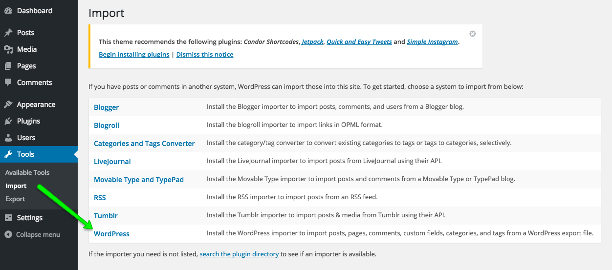At 1st time you need to install WordPress importer plugin
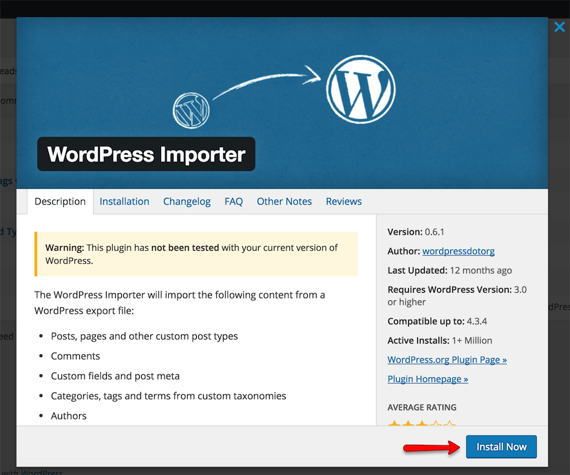Once installed you need to activate the plugin and run the importer.
-
Look for Import XML folder in unzipped package downloaded from themeforest and use the XML file within it.
After importing XML file.
- Assign posts to an existing author.
- Mark the checkbox to download and import file attachments
- Click 'Submit' button
Import process can take few minutes. So wait for it and try to keep the focus on current tab in your browser.
After that is done, you will have bunch of posts, pages and other contents as on the theme demo.
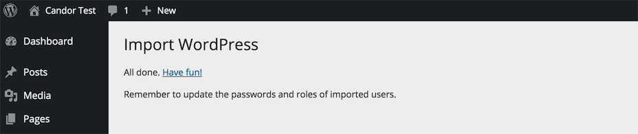 -
To configure permalinks settings visit WordPress Admin > Settings > Permalinks and configure then save it as displayed in image below.
Configure Header
Navigate to Appearance > Customize and look into Site Identity and Header section to explore further settings.
Site Identity
You can upload your site's logo, title, description tag and site icon from this section.
Header
You can customize almost everything in header from related settings in header section. As pointed in screenshot below.
Blog Page Settings
Navigate to Appearance > Customize and look into Blog section to explore further settings as displayed below.
Variation One
Variation Two
Variation Three
Variation Four
Footer Settings
Navigate to Appearance > Customize and look for Footer panel.
Blog Post Settings
Navigate to Appearance > Customize and look into Blog Post panel to explore settings related to blog post.
Add Blog Post
Go to WordPress Admin > Posts > Add New- Provide the post title
- Provide the post contents
- Add or select the related category
- Add or select the related tags
-
Provide the featured image.
The recommended minimum width for featured image is 1140px and height is flexible.
The bigger size images will be cropped automatically.
- Publish the post once it is ready.
Add Full Width Page
Go to WordPress Admin > Pages > Add New- Provide the page title
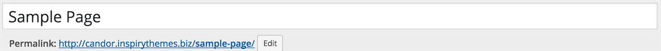 - Provide the page contents
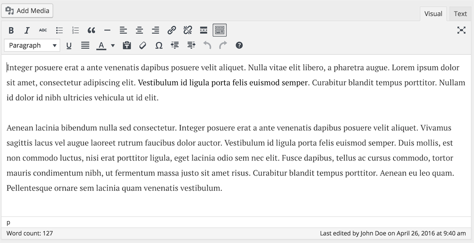 - Select the Full Width Template from page attributes.
- Publish the page once it is ready.
- After publishing you need to add the newly created page in menu from WordPress Admin > Appearance > Menus
Add Contact Us Page
You can use any of the following plugins to add Contact Form to your page(s)
Go to WordPress Admin > Pages > Add New- Provide the page title

There are three ways to add contact form in the page
Contact form Using Jetpack Plugin
Once you have installed and activated the jectpack plugin, click add contact form button to insert contact form on the page.

Contact form Using Ninja Forms Plugin
Once you have installed and activated the Ninja Forms plugin, click add contact form button to insert contact form on the page.
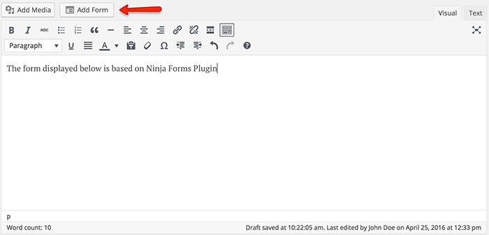
Contact form Using Contact Form 7 Plugin
Once you have installed and activated the Contact Form 7 plugin, click add contact form button to insert contact form on the page.
- Publish the page once it is ready.
- After publishing you need to add the newly created page in menu from WordPress Admin > Appearance > Menus
Author Profile Widget
- Go to Appearance > Widgets and look for Candor - Author Profile widget.
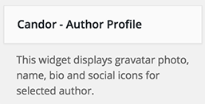 - Use that widget in a sidebar. Select the author from the list.
- Now check out the front end of your site and you will have the Author Profile widget working for your site.
- Information related to a user can be modified from his user profile page as displayed in screenshot below.
Recent Posts Widget
- Go to Appearance > Widgets and look for Candor - Recent Posts widget.
- Use that widget in a sidebar. Provide its title and number of posts to display.
- Now check out the front end of your site and you will have the Recent Posts widget working for your site.
Top Posts Widget
- Go to Appearance > Widgets and look for Candor - Top Posts widget.
- Use that widget in a sidebar. Provide its title and number of posts to display.
- Now check out the front end of your site and you will have the Top Posts widget working for your site.
How to set up Twitter Widget
- Install the Quick and Easy Tweets plugin.
-
Now, you need the twitter App's consumer key, consumer secret, access token and access token secret for twitter authentication.
To get all these keys, You need to register a new twitter app from following url
After registering app and generating access token you will have api keys and access token as displayed below

- Now go to Appearance > Widgets and look for Quick and Easy Tweets widget.
- Provide title, twitter username, number of tweets, keys and save the widget settings.
- Now check out the front end of your site and you will have a twitter widget working for your site.
How to set up Instagram Widget
- Install the Wp Instagram Widget plugin.
- Go to Appearance > Widgets and look for Instagram widget.
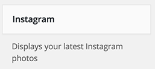 - Add the widget to Instgaram Feed widget area as this will display instagram images in footer.
Once added, Provide Title, Username, Number of photos, Photo size, Open link in, Link text ( leave it blank ) and save the widget settings.
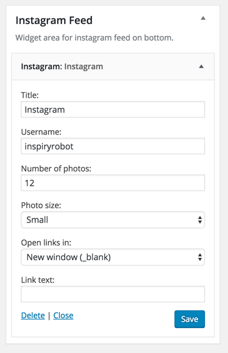 - Now check out the front end of your site and you will have a working Instagram widget in the footer of your website.
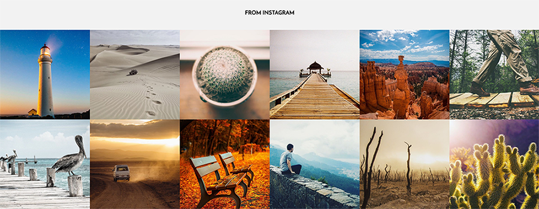
Short Codes
To use shortcodes, Make sure to install & activate Candor Shortcodes plugin that is included with in the theme pack.
Buttons
[inspiry_button link="#"]Default[/inspiry_button]
[inspiry_button type="info" link="#"]Information[/inspiry_button]
[inspiry_button type="success" link="#"]Success[/inspiry_button]
[inspiry_button type="warning" link="#"]Warning[/inspiry_button]
[inspiry_button type="danger" link="#"]Danger[/inspiry_button]
[inspiry_button link="#" target="_blank"]To Open New Tab[/inspiry_button]
Alerts
[inspiry_alert]This message is displayed in default alert box.[/inspiry_alert]
[inspiry_alert type="success"]This message is displayed in a success alert box.[/inspiry_alert]
[inspiry_alert type="warning"]This message is displayed in a warning alert box.[/inspiry_alert]
[inspiry_alert type="danger"]This message is displayed in a danger alert box.[/inspiry_alert]
Progress Bars
[inspiry_progress_bar value="40"]
[inspiry_progress_bar value="60" color="green"]
[inspiry_progress_bar value="80" color="orange"]
[inspiry_progress_bar value="50" color="red"]

Tabs
[inspiry_tabs titles="Rise Early,Do Less,Slow Down"]
[inspiry_tab_pane]Your Content [/inspiry_tab_pane]
[inspiry_tab_pane]Your Content [/inspiry_tab_pane]
[inspiry_tab_pane]Your Content [/inspiry_tab_pane]
[/inspiry_tabs]
Accordion
[inspiry_accordion]
[inspiry_accordion_block title="Your Title"]Your Content[/inspiry_accordion_block]
[inspiry_accordion_block title="Your Title"]Your Content[/inspiry_accordion_block]
[inspiry_accordion_block title="Your Title"]Your Content[/inspiry_accordion_block]
[/inspiry_accordion]
Toggles
[inspiry_toggles]
[inspiry_toggle_block title="Your Title"]Your Content[/inspiry_toggle_block]
[inspiry_toggle_block title="Your Title"]Your Content[/inspiry_toggle_block]
[inspiry_toggle_block title="Your Title"]Your Content[/inspiry_toggle_block]
[/inspiry_toggles]
Contrast Content
[inspiry_contrast_content]Your Content[/inspiry_contrast_content]
Wide Content For Images Only
[inspiry_wide_content]Wide Content[/inspiry_wide_content]
Full Width Content For Images Only
[inspiry_full_width_content]Full Width Content[/inspiry_full_width_content]
Columns
1 Column Short Code Example
[inspiry_columns]
[inspiry_single_column]1/1[/inspiry_single_column]
[/inspiry_columns]
2 Columns Short Code Example
[inspiry_columns]
[inspiry_two_column]1/2[/inspiry_two_column]
[inspiry_two_column]1/2[/inspiry_two_column]
[/inspiry_columns]

3 Columns Short Code Example
[inspiry_columns]
[inspiry_one_third]1/3[/inspiry_one_third]
[inspiry_one_third]1/3[/inspiry_one_third]
[inspiry_one_third]1/3[/inspiry_one_third]
[/inspiry_columns]
4 Columns Short Code Example
[inspiry_columns]
[inspiry_one_fourth]1/4[inspiry_one_fourth]
[inspiry_one_fourth]1/4[inspiry_one_fourth]
[inspiry_one_fourth]1/4[inspiry_one_fourth]
[inspiry_one_fourth]1/4[inspiry_one_fourth]
[/inspiry_columns]
Mix Columns Short Code Example
[inspiry_columns]
[inspiry_one_sixth]1/6[/inspiry_one_sixth]
[inspiry_two_third]2/3[/inspiry_two_third]
[inspiry_one_sixth]1/6[/inspiry_one_sixth]
[/inspiry_columns]
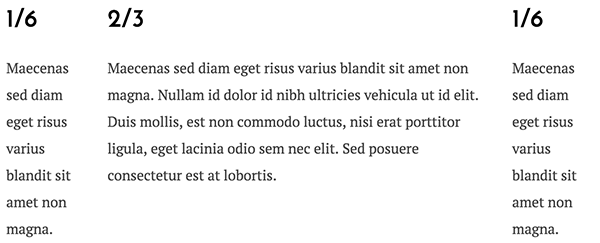
Mix Columns Short Code Example
[inspiry_columns]
[inspiry_three_fourth]3/4[/inspiry_three_fourth]
[inspiry_one_fourth]1/4[inspiry_one_fourth]
[/inspiry_columns]
Fonts
Navigate to Appearance > Customize and look into Typography panel to explore settings related to fonts.
Translating The Theme
This theme is translation ready and translate it in your language you can consult This Knowledge Base Article
How to Modify Styles
There are various options available to modify styles in this theme.
- Basic Styles - Go to Appearance > Customize and navigate to Styles to change basic styles.
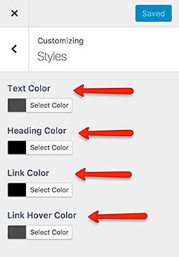
- Additional CSS - Go to Appearance > Customize and navigate to Additional CSS to add your styles.

- Custom CSS in Child Theme - 'child-custom.css' file is provided in child theme to add major css changes.
Note: It is highly recommended to use child theme for any changes that you want to make as this way you can update parent theme whenever an update becomes available. Simply copy a template file that you want to change to child theme after creating same directory structure and then modify it. For more info http://codex.wordpress.org/Child_Themes.
- Custom CSS in Parent Theme - if you are not using child theme then 'css/custom.css' file is provided in parent theme to add major css changes.
Use Child Theme for Customization ( Highly Recommended )
It is highly recommended to use child theme for any customization that you want to make, So that you can easily update parent theme whenever a new update becomes available. A pre-built ready to use child theme is included in the main theme pack that you have downloaded from themeforest.
Hire Customization Services
If you need some additional features or want modification in existing theme features then you can contact us for theme customization service.